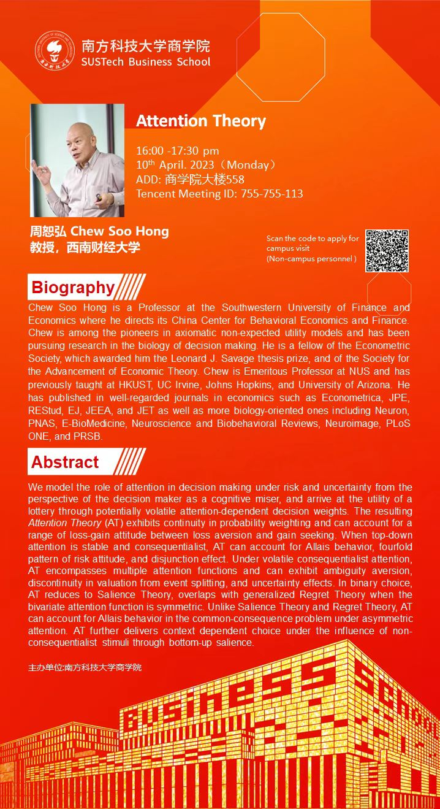
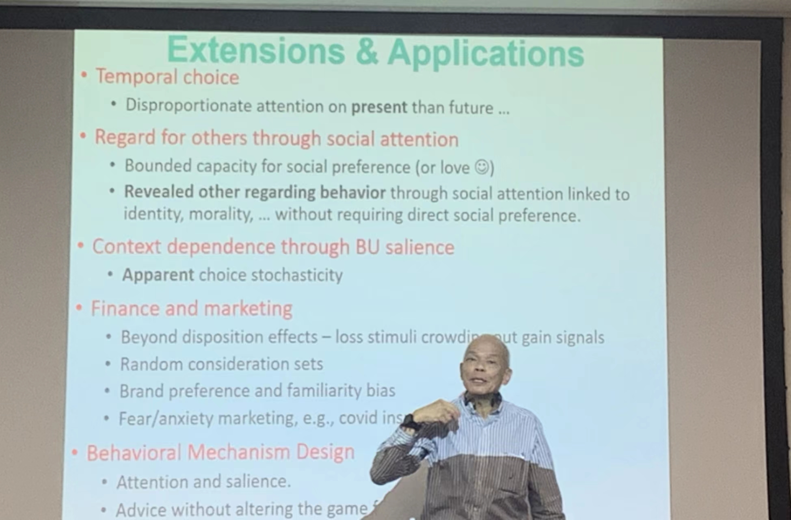

应南科大应用经济学系（筹）和叶茂亮副教授的邀请，西南财经大学周恕弘教授于4月10日下午为商学院和南科大师生在商学院大楼558带来题为Attention Theory的前沿学术讲座。该讲座由负责筹办应用经济学系的资深教授亲自主持。周恕弘教授是西南财经大学中国行为经济与行为金融研究中心特聘主任，计量经济学会院士、经济学理论促进学会（SAET）院士（Fellow），世界著名的实验经济学家和行为经济学家，曾执教于美国亚利桑那大学、约翰·霍普金斯大学、加州大学尔湾分校、香港科技大学。其在经济学以及其他学科权威期刊上共发表过学术论文六十余篇，其中：Journal of Political Economy（一篇）、Econometrica（四篇）、Review of Economic Studies（一篇）、Journal of Economic Theory（十三篇）、Neuron（一篇）、Proceedings of the National Academy of Sciences（一篇）、Management Science（一篇）等。
该讲座从认知科学的角度出发，阐述决策者面对风险与不确定性下认知局限产生的原因，并基于此提出了attention thoery。具体地，attention theory被两方面因素主导，其一是top-down executive attention network，其二是bottom-up salience network。两者可以分别对已有的行为理论和现象进行补充和解释，包括Allais behavior、fourfold pattern of risk attitude、regret theory等。该研究在多领域有着广泛的应用前景，譬如金融、市场营销和行为机制设计等。
来自南科大以及北京大学汇丰商学院、香港中文大学（深圳）、北理莫斯科、深圳大学、华南师范大学等大湾区的众多师生就attention（注意力）的相关研究进行了热烈的线下讨论。该讲座也吸引了数十位线上听众，收到师生广泛好评。讲座后十数位大湾区的线下参与者与周教授在晚餐期间继续深入交流。

